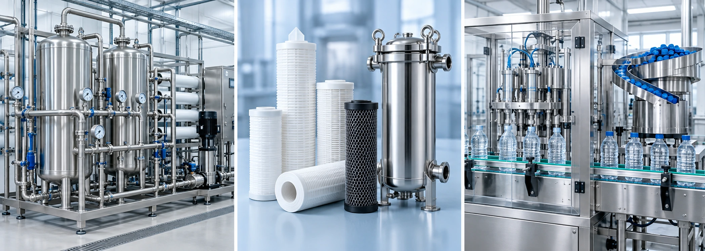

NEIPCLOVA / WATER
Understand the water.
Design the system.
A filter is essential, but a useful solution also considers the source, the process, the operating conditions and the intended use.

Water treatment starts with the source.
Define incoming-water characteristics and the quality required at the point of use. A household, irrigation system and beverage line may require different treatment selections. The process sequence is determined by source assessment and application requirements, rather than by a universal equipment package.
Water quality management spans the source, treatment and delivery. Operational monitoring and maintenance help keep the selected system within its intended conditions.
WHO water safety planning backgroundChoose the filter by its function.
Filter media and configuration should be selected for a defined duty. Neipclova explores special treatment in relation to a selected filter or material interface. The confidential treatment approach is discussed separately from conventional filter specifications; it does not replace product-specific verification.
| Specification topic | What to clarify |
|---|---|
| Source and intended use | Incoming-water results, target quality and point of use |
| Media and retention | Filter material, rated retention and the exact manufacturer's performance documentation |
| Hydraulics | Required flow, inlet pressure and pressure difference across the filter |
| Housing and connections | Material compatibility, seals, connection size and installation arrangement |
| Maintenance | Change-out criteria, cleaning where applicable, service records and verification |
| Special-treatment evaluation | Treated and comparison configurations, controlled conditions and relevant measured results |
No universal removal percentage, filtration rating or drinking-water safety guarantee is claimed here. Request the specification and evidence for the proposed configuration.
Filling & capping: the next interface.
For a packaged beverage, preparation does not end at the treatment outlet. Define the transfer and storage arrangement, container format, filling method, closure system and required production rate together.
- Product: water or beverage, intended temperature and relevant properties.
- Container: material, volume, neck finish and selected closure.
- Line: required bottles per hour, filling accuracy, conveying and available space.
- Hygiene: cleaning procedure, relevant sanitisation arrangements and product-contact materials.
- Closure: cap handling, application settings and leak or seal verification.
The illustrated line is a concept. Supply scope, machinery configuration and performance are agreed for the actual project.